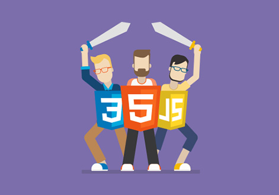

Фронтенд-разработчик - это универсальный солдат. Он и макет заверстает, и веб-приложение построит, и серверную часть, если надо, освоит.
Карьерный путь фронтендера обычно начинается в верстальщика - это самый логичный и общепринятый вариант. Сначала изучается связка HTML+CSS, затем на нее "наслаиваются" знания JavaScript, библиотек и фреймворков. Будущий специалист также изучает ключевые понятия построения серверной части, его не пугают препроцессоры и сборщики LESS, SASS, GRUNT, GULP, он умеет работать с DOM, API, SVG-объектами, AJAX и CORS. Затем все это шлифуется умением работать с контролем версий (Git, GitHub и т.д.), графическими редакторами, с шаблонами различных CMS и пониманием принципов UI/UX-дизайна.
Кроме того, нелишним будут soft skills: взаимодействие с людьми и работа в команде, умение наладить эффективный workflow и решать поставленные задачи наиболее оптимальным способом.
Необойтись без знаний английского языка.
Конечно, это все в идеале. Всегда можно выбрать себе стек навыков по душе и развиваться в более узком направлении.

Для начала снять розовые очки. Обучение - это труд и самодисциплина. Большинство начинающих айтишников отсеиваются на этапе "хочу стать программистом и получать зарплату в долларах, но не думал, что придется так много учиться". Уникальность программирования и вообще любой айтишной специальности в постоянном самообучении! В этом и сложность, и прелесть IT-сферы. Если вас это не пугает - круто! У вас есть все шансы стать отличным специалистом.